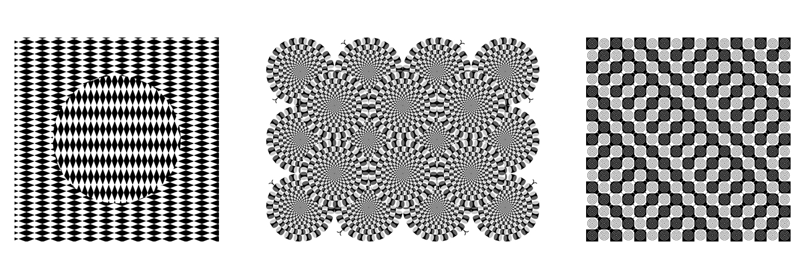

Людина бачить реальність із запізненням на 100 мілісекунд...
...через це мозок намагається заповнити прогалину в часі та доповнює картину за допомогою досвіду.
...Здогадки мозку не завжди правильні.
- Трикутник Пенроуза (мал.1)
- Спрощений контур малюнка Роджера Хейворда (мал.2)
- Сходи Пенроуза (мал.3)
Однією з найпоширеніших таких ілюзій є «Трикутник Kanizsa»
і
фігура Ехерштейна
(посередині).
Ми бачимо яскравий білий трикутник,
якого насправді там немає.
А також білі кола, які також відсутні.